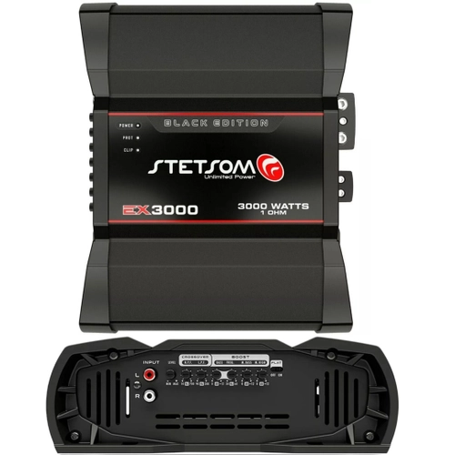
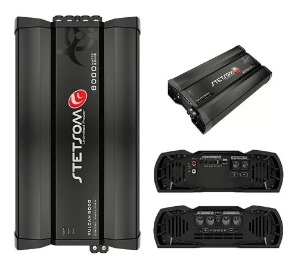
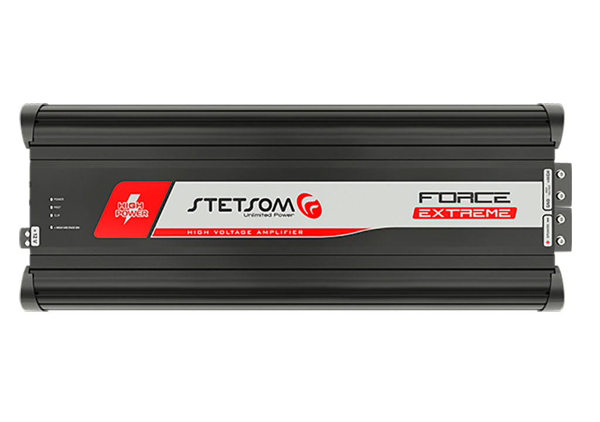

-

EX3000 BLACK EDITION 1 OHM
DESCRIÇÃO
ESPECIFICAÇÕES TÉCNICAS
CARACTERÍSTICAS EX3000 BLACK EDITION 1 OHM
Potência RMS em 1 Ohm 12,6V 3000W
Potência RMS em 2 Ohms 12,6V 2000W
Potência RMS em 1 Ohm 14,4V 3350W
Potência RMS em 2 Ohms 14,4V 2100W
Tensão de Alimentação 9V ~ 16V
Resposta em Frequência 10Hz ~ 20KHz
Crossover Low Pass 90Hz ~ 20KHz
Crossover High Pass 10Hz ~ 700Hz
Relação Sinal Ruído >90dB
Impedância de Entrada 7K Ohms
Consumo com Sinal Musical 150A
Consumo com Sinal Bass 300A
Dimensões (A x L x C) mm 78 x 231.5 x 191.5 mm
Peso Kg 2.3 Kg
R$800,00
-

VULCAN 8000 – 1 OHM
DESCRIÇÃO
A linha VULCAN foi desenvolvida para amantes do som automotivo que buscam máximo desempenho em amplificadores FULL-RANGE.
Sua resposta de frequência de 10Hz a 12kHz oferece qualidade e definição de áudio, podendo ser utilizado com subwoofers, woofers, drivers e tweeters.
ESPECIFICAÇÕES TÉCNICAS
CARACTERÍSTICAS VULCAN 8000 – 1 OHM
Número de Canais 1
Potência RMS 8000W
Potência RMS em 1 Ohm 12,6V 8000W
Potência RMS em 2 Ohms 12,6V 4400W
Potência RMS em 1 Ohm 14,4V 8600W
Potência RMS em 2 Ohms 14,4V 5100W
Tensão de Alimentação 9V ~ 16V
Resposta em Frequência 10Hz ~ 12KHz
Crossover Low Pass 90Hz ~ 12KHz
Crossover High Pass 10Hz ~ 90Hz
Relação Sinal Ruído >90dB
Sensibilidade de Entrada 220mV
Impedância de Entrada 14K Ohms
Impedância Mínima de Saída 1 OHM
Consumo com Sinal Musical 370A
Consumo com Sinal Bass 740A
Dimensões (A x L x C) mm 78 x 231,5 x 423
Peso Kg 5,8
R$1950,00
-

FORCE EXTREME
ESPECIFICAÇÕES TÉCNICAS
CARACTERÍSTICAS FORCE EXTREME
Número de Canais 1
Potência RMS 180.000W RMS*
Tensão de Alimentação Verifique a tabela de dimensionamento de baterias
Resposta em Frequência 5Hz à 3KHz
Impedância de Entrada 28K Ohms
Consumo com Sinal Musical 300A (0.25 Ohm)
Consumo com Sinal Bass 600A (0.25 Ohm)
Dimensões (A x L x C) mm 77 x 220 x 570
Peso Kg 8,0
R$2500,00